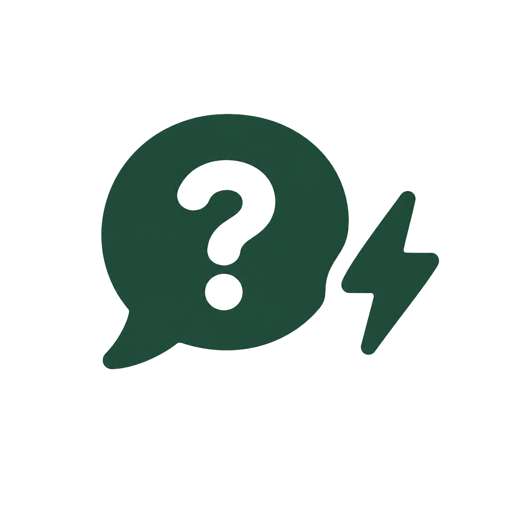
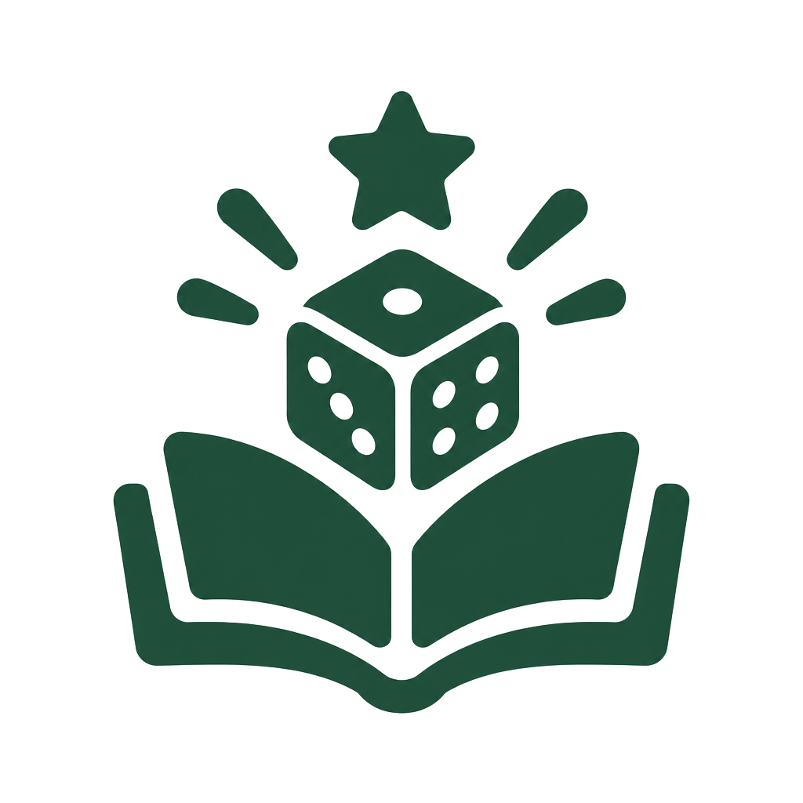

Vozes Em Transito
Vozes Em Transito
- Inicio
- Projeto
- Conceitos
- Produtos
- Equipe

O projeto “Vozes em Trânsito: Memória, linguagem e território nas trilhas de Camaçari” integra as atividades pedagógicas e investigativas do 3º Trimestre na Escola SESI Milton Santos. A proposta articula as áreas de Ciências Humanas e Linguagens em uma investigação interdisciplinar sobre a formação histórica, cultural e social de Camaçari e de seu entorno.
A pesquisa parte da necessidade de observar essa formação para além das narrativas tradicionais, considerando diferentes experiências, memórias e formas de participação na construção da identidade local. Nesse processo, a linguagem é compreendida como uma ferramenta fundamental para registrar, transmitir e ressignificar conhecimentos produzidos pelas comunidades.
Nesse horizonte, território não é compreendido apenas como uma delimitação física ou administrativa. Ele também envolve o “chão e a população”, formando uma dimensão viva e relacional marcada por identidade, pertencimento, memória e relações de poder.
A partir dessa compreensão, o projeto busca valorizar trajetórias historicamente marginalizadas e investigar como diferentes linguagens preservam e transformam a memória coletiva. A oralidade assume papel central nesse processo, pois relatos, histórias, expressões e manifestações culturais permitem que conhecimentos e experiências sejam transmitidos entre gerações, mantendo vivas diferentes formas de compreender e ocupar Camaçari.

A memória e a oralidade são fundamentais para a preservação de conhecimentos, experiências e tradições transmitidas entre gerações. A memória coletiva não representa apenas a recordação do passado, mas também a maneira como grupos sociais constroem suas identidades e interpretam suas trajetórias históricas. Por meio de narrativas, cantos, provérbios, histórias familiares e práticas culturais, comunidades negras, indígenas e tradicionais preservam saberes que nem sempre foram registrados nos documentos oficiais. Nesse sentido, a oralidade constitui uma forma legítima de produção e transmissão de conhecimento, contrariando a ideia de que somente a escrita pode validar uma experiência histórica. No Brasil, a valorização da memória oral também representa uma forma de enfrentamento ao apagamento histórico de populações marginalizadas. Ao reconhecer as narrativas de pessoas mais velhas, lideranças comunitárias e guardiões de tradições, torna-se possível recuperar experiências silenciadas e ampliar a compreensão do passado. Preservar essas memórias significa reconhecer o protagonismo de grupos historicamente excluídos e compreender que a história também se constrói pelas vozes, pelos territórios e pelas experiências coletivas.
A linguagem desempenha um papel essencial na construção das identidades individuais e coletivas, pois expressa experiências históricas, pertencimentos culturais e relações sociais. As formas de falar, os sotaques, as expressões populares e os vocabulários regionais carregam marcas dos grupos que participaram da formação da sociedade brasileira. Entretanto, essas diferenças frequentemente são interpretadas a partir de padrões sociais que estabelecem hierarquias entre maneiras de falar. O preconceito linguístico surge quando determinadas variedades são consideradas inferiores, transformando diferenças culturais em mecanismos de exclusão e discriminação. No contexto brasileiro, reconhecer a diversidade linguística significa compreender que a língua portuguesa foi constituída por contribuições indígenas, africanas e europeias, em meio a relações desiguais de poder. A valorização de diferentes formas de expressão permite questionar a ideia de que apenas uma maneira de falar representa inteligência, conhecimento ou legitimidade social. Assim, a linguagem torna-se também um espaço de resistência, afirmação identitária e disputa política, no qual os sujeitos reivindicam o direito de expressar suas histórias sem precisar negar suas origens culturais.
Apesar dessas violências, as contribuições africanas e indígenas permanecem presentes no português brasileiro, em vocabulários, expressões cotidianas, topônimos e práticas culturais. Reconhecer essas heranças permite compreender que a formação linguística do país resultou de processos históricos marcados tanto pela violência quanto pela resistência. Preservar línguas ameaçadas e valorizar suas contribuições constitui, portanto, uma forma de proteger patrimônios culturais, fortalecer identidades coletivas e garantir que os conhecimentos de diferentes povos continuem sendo transmitidos às próximas gerações.
Os conceitos de amefricanidade e pretuguês foram desenvolvidos por Lélia Gonzalez para questionar a centralidade europeia na interpretação da sociedade brasileira e reconhecer as contribuições africanas e indígenas na formação cultural das Américas. A amefricanidade evidencia experiências históricas, políticas e culturais compartilhadas por populações negras e indígenas, destacando suas estratégias de resistência à colonização. O conceito permite compreender que a identidade latino-americana não pode ser explicada exclusivamente por referências europeias, pois também foi construída pelas ações, pelos conhecimentos e pelas culturas dos povos submetidos à dominação colonial. O pretuguês, por sua vez, chama atenção para as marcas africanas presentes no português falado no Brasil, especialmente aquelas relacionadas às línguas e às experiências históricas das populações negras. Ao utilizar esse conceito, Gonzalez questiona a desvalorização de características linguísticas associadas à população negra e evidencia como o racismo também se manifesta nas avaliações sobre a maneira de falar. Os dois conceitos contribuem para reconhecer a participação negra na construção da sociedade brasileira e para questionar hierarquias que inferiorizam conhecimentos, culturas e expressões linguísticas não europeias.
O Julho das Pretas é uma agenda de mobilização política, cultural e intelectual protagonizada por mulheres negras, voltada à valorização de suas trajetórias, à denúncia das desigualdades raciais e de gênero e à reivindicação de direitos. A iniciativa se articula ao 25 de julho, Dia Internacional da Mulher Negra Latino-Americana e Caribenha e, no Brasil, Dia Nacional de Tereza de Benguela e da Mulher Negra. Suas atividades fortalecem redes de solidariedade, ampliam a circulação de conhecimentos produzidos por mulheres negras e questionam sua histórica invisibilidade nos espaços políticos, acadêmicos e culturais. O Dois de Julho, celebrado na Bahia, marca a consolidação da Independência na província em 1823 e constitui uma referência importante para compreender a participação popular nas lutas pela emancipação brasileira. A aproximação entre essas duas datas permite refletir sobre como determinados protagonistas históricos recebem maior reconhecimento do que outros. Ao valorizar mulheres negras, trabalhadores e setores populares, torna-se possível ampliar a memória da independência e questionar narrativas que privilegiam figuras das elites. Dessa forma, ambas as referências contribuem para discutir memória coletiva, participação política e reconhecimento dos sujeitos que construíram a história.
A distorção da percepção do passado está relacionada à maneira como essas omissões influenciam a compreensão do presente. Quando a escravização é apresentada sem considerar a resistência negra, ou quando a história nacional ignora a participação de grupos populares, produzem-se interpretações incompletas que podem naturalizar desigualdades. Recuperar memórias silenciadas exige confrontar fontes históricas, valorizar testemunhos e reconhecer diferentes perspectivas sobre os acontecimentos. Esse trabalho não significa substituir uma narrativa única por outra, mas construir interpretações mais plurais, críticas e fundamentadas. Assim, a memória torna-se instrumento de reflexão histórica, reconhecimento social e enfrentamento das estruturas de discriminação.
A colonização do saber ocorre quando determinadas formas de conhecimento são consideradas universais e superiores, enquanto outras são desvalorizadas por estarem associadas a povos historicamente subordinados. Durante a colonização, conhecimentos europeus foram utilizados para legitimar a dominação de populações indígenas e africanas, desconsiderando seus sistemas filosóficos, científicos, religiosos e culturais. Essa hierarquização não desapareceu com o fim do domínio colonial formal, pois seus efeitos permanecem em currículos escolares, instituições acadêmicas e práticas sociais que frequentemente privilegiam referências europeias. Como consequência, intelectuais negros, indígenas e representantes de comunidades tradicionais ainda enfrentam obstáculos para obter reconhecimento e espaço na produção do conhecimento. Enfrentar a colonização do saber significa reconhecer que diferentes povos produzem conhecimentos legítimos a partir de suas experiências históricas, de suas relações com o território e de suas formas de organização social. Isso não implica rejeitar a ciência, mas questionar os critérios excludentes que determinam quais sujeitos podem ser reconhecidos como produtores de conhecimento. A valorização de intelectuais negros e indígenas, das tradições orais e das experiências comunitárias contribui para ampliar as perspectivas educacionais e científicas. Dessa maneira, descolonizar o saber significa transformar as formas de ensinar, pesquisar e interpretar a realidade, reconhecendo a pluralidade de conhecimentos que constituem a sociedade brasileira.

Surpresas e desafios esperam por você em cada casa! Encontre diferentes eventos ao longo do tabuleiro e descubra novas possibilidades que tornam cada partida única e cheia de emoção.
Desbloqueie Fichas de Voz com significados e curiosidades especiais para ampliar seus conhecimentos e conquistar pontos extras durante a partida. Aprenda enquanto avança e supere seus desafios!


A cada rodada, novas perguntas desafiam seus conhecimentos sobre a história e a cultura da Bahia. Acerte as respostas, acumule pontos e mostre que você conhece o passado baiano!

Explore a história da Bahia e conheça suas figuras históricas de maneira interativa e divertida. Aprenda sobre acontecimentos marcantes, valorize a cultura baiana e divirta-se enquanto descobre mais sobre esse rico patrimônio histórico.